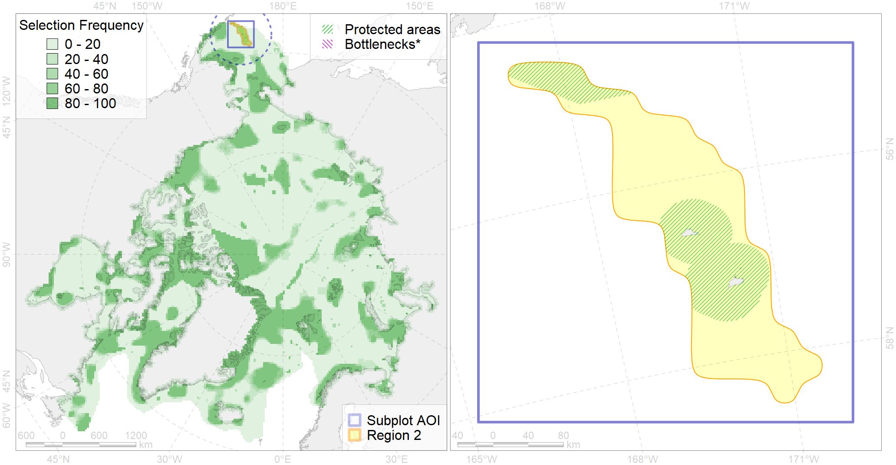

Region 2
Region 2
“ArcNet” scenario 33 achievement for region 2.
Use Accenter for advanced mode.

1
CFs inside of Region completely
4
CFs inside of Region at quarter
5
Complete-targets achievement by Region
12
Half-targets achievement by Region
| CF | Name | Target Achievement for Region | Proportion of Target Achievement in Region | Amount Proportion in Region |
|---|---|---|---|---|
| 2033 | Northern Fur seal rookeries | 231.5% | 100.0% | 100.0% |
| 5063 | Killer whale feeding areas in the Bering Sea | 279.1% | 77.4% | 36.8% |
| 7097 | I.3.2.3. northeastern canyons of Bering Sea | 85.1% | 84.2% | 34.0% |
| 5057 | Humpback whale summer feeding areas in Eastern Aleutians | 193.8% | 35.7% | 25.9% |
| 2055 | Steller Sea Lion habitats of critical importance | 35.2% | 21.1% | 20.7% |
| 7095 | I.3.2.1. Bering Sea northeastern slope | 103.4% | 75.4% | 17.3% |
| 7055 | cold corals of the Pacific | 27.0% | 22.8% | 16.0% |
| 6088 | 6088 Aethipusillbreeding colonies | 43.3% | 14.6% | 11.5% |
| 6046 | Stellers eider (Polysticta stelleri) Pacific wintering grounds | 19.9% | 17.8% | 10.6% |
| 2056 | Steller Sea Lion foraging areas | 16.2% | 14.7% | 10.1% |
| 7091 | I.3.1.5. Shelf valleys of eastern Bering Sea | 41.4% | 39.6% | 8.7% |
| 6001 | Least Auklet (Aethia pusilla) breeding colonies | 24.2% | 9.6% | 8.7% |
| 6077 | Common murre (Uria aalge inornata) breeding colonies | 15.8% | 9.8% | 8.5% |
| 4084 | Fish zoogeography, Pacific Region, 6 - high-boreal and 7 - low-boreal districts of the Eastern North-Pacific subregion | 78.4% | 18.1% | 7.4% |
| 6079 | Thick-billed murre (Uria lomvia arrra) breeding colonies | 9.4% | 8.8% | 6.8% |
| 5047 | Fin whale summer feeding areas in the Bering Sea | 28.0% | 24.5% | 6.6% |
| 6102 | 6102 Uriaalge inornatbreeding colonies | 16.2% | 9.6% | 6.4% |
| 6017 | Long-tailed duck (Clangula hyemalis) East Asian wintering grounds | 6.5% | 6.3% | 5.1% |
| 6103 | 6103 Urilomviarrrbreeding colonies | 9.5% | 7.2% | 5.0% |
| 5019 | Beluga of the Eastern Bering Sea winter distribution | 7.1% | 7.1% | 4.6% |
| 2053 | Sea otter distribution range | 7.7% | 5.1% | 4.4% |
| 2032 | Northern Fur seal range | 51.9% | 9.9% | 4.3% |
| 6087 | Red-legged kittiwake (Rissa brevirostris) wintering grounds | 18.2% | 8.4% | 4.3% |
| 6107 | 6107 Fratercula corniculata breeding colonies | 15.2% | 5.9% | 4.0% |
| 4065 | Range of the Pacific Halibut (Reinhardtius hippoglossoides matsuurae) (F 50) | 116.0% | 11.9% | 4.0% |
| 2034 | Ribbon seal foraging areas in the Bering Sea | 57.4% | 9.3% | 4.0% |
| 3017 | Marginal Ice Zone distribution in April in the Eastern Bering Sea LME | 26.6% | 8.6% | 3.9% |
| 6078 | Common murre (Uria aalge inornata) wintering grounds | 17.4% | 11.0% | 3.6% |
| 6084 | Thick-billed murre (Uria lomvia) Pacific wintering grounds | 13.0% | 11.0% | 3.6% |
| 6048 | Black-legged kittiwake (Rissa tridactyla tridactyla) breeding colonies | 5.6% | 4.1% | 3.6% |
| 6100 | 6100 Risstridactylpollicarius breeding colonies | 4.9% | 4.9% | 3.5% |
| 4044 | Range of the Pacific cod (Gadus macrocephalus) (F 38) | 99.0% | 6.7% | 3.4% |
| 7090 | I.3.1.4. Middle and outer shelf of eastern Bering Sea | 80.7% | 8.2% | 3.4% |
| 4070 | Local forms of the White-Sea herring (Clupea pallasii) (F8) | 11.6% | 6.5% | 3.2% |
| 4004 | Range of the Pacific Capelin (Mallotus villosus catervarius) (F11) | 84.4% | 6.2% | 2.9% |
| 4050 | Range of the Pollock (Theragra chalcogramma) (F 43) | 41.0% | 6.0% | 2.8% |
| 2043 | Ringed seal whelping areas in the Bering Sea | 9.6% | 5.5% | 2.6% |
| 4023 | Feeding/migration area of the Pink Salmon (Oncorhynchus gorbuscha), native distribution (F23) | 37.1% | 5.6% | 2.6% |
| 4042 | Range of the Saffron cod (Eleginus gracilis) (F 36) | 36.3% | 5.4% | 2.5% |
| 5054 | Harbour porpoise feeding areas in the Bering Sea | 36.8% | 7.0% | 2.5% |
| 6085 | Horned puffin (Fratercula corniculata) breeding colonies | 6.8% | 3.1% | 2.5% |
| 2054 | Spotted seal foraging areas | 18.7% | 3.7% | 2.2% |
| 2063 | Spotted seal whelping areas as predicted by MIZ distribution | 6.7% | 3.8% | 1.9% |
| 2006 | Bearded seal whelping areas in the Bering Sea | 5.1% | 2.9% | 1.5% |
| 2060 | Ribbon seal whelping areas as predicted by MIZ distribution | 6.4% | 2.2% | 1.2% |
| 6039 | Ivory gull (Pagophila eburnea) Pacific wintering grounds | 2.9% | 2.2% | 0.9% |
| 4025 | Feeding/migration area of the Coho Salmon (Oncorhynchus kisutch) (F 25) | 5.9% | 0.6% | 0.4% |
| 4026 | Feeding/migration area of the Chinook Salmon (Oncorhynchus tshawytscha) (F 26) | 5.2% | 0.6% | 0.3% |
| 4033 | Feeding area of the Dolly Varden (Salvelinus malma) (F 30) | 2.2% | 0.5% | 0.3% |
| 1019 | Pacific Walrus Winter Distribution | 0.7% | 0.4% | 0.2% |
| 4024 | Distribution of the Chum Salmon (Oncorhynchus keta) (F24) | 2.7% | 0.3% | 0.2% |
| 4058 | Range of the Arctic flounder (Liopsetta glacialis) (F48) | 2.6% | 0.3% | 0.2% |
| 5112 | Arctic Cetaceans (beluga, bowhead, narwhal) winter habitats as predicterd by MIZ | 0.2% | 0.1% | 0.1% |
| 4006 | Feeding/nursery area of the Pacific rainbow smelt (Osmerus dentex) (F12) | 0.1% | 0.0% | 0.0% |